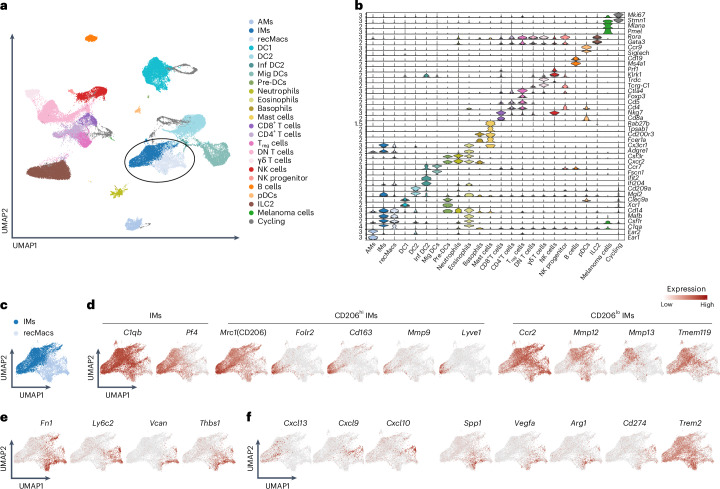
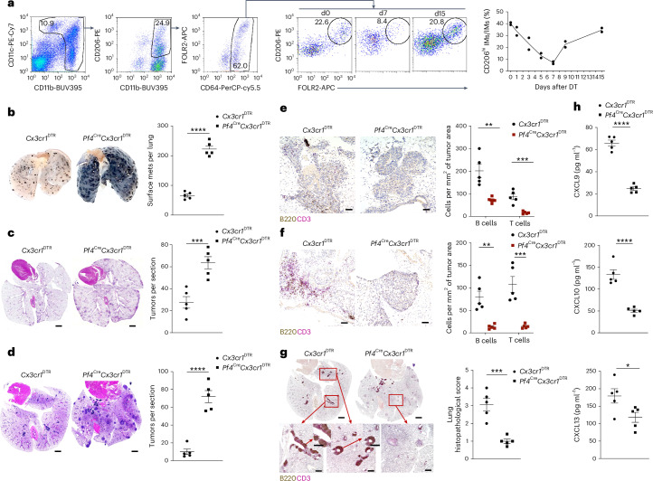
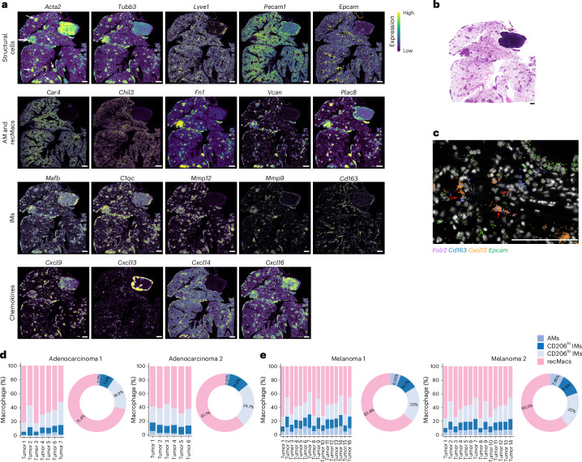
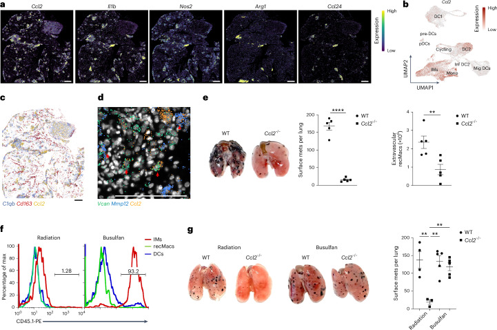
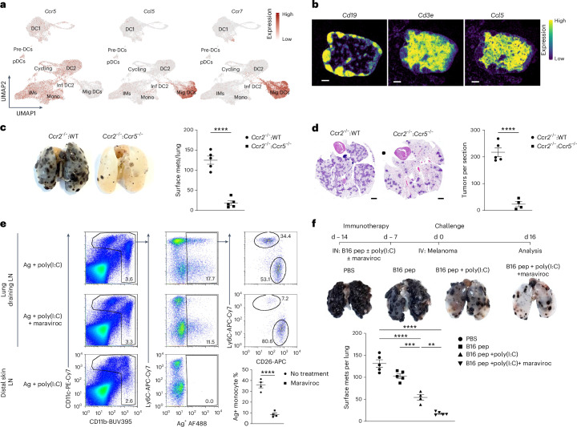

基本信息#
| 项目 | 内容 |
|---|---|
| 原文题名 | Chemokine-defined macrophage niches establish spatial organization of tumor immunity |
| 中文题名 | 趋化因子定义的巨噬细胞生态位建立肿瘤免疫的空间组织 |
| 期刊 | Nature Immunology |
| 发表信息 | 2026-03-23 online；2026 Apr, 27(4):715-724 |
| 作者 | Soubhik Ghosh, Xin Li, Kavita Rawat, Aishwarya Dighal, Stephanie Kalinowski, Reza Hosseini, Fred W. Kolling, Carol S. Ringelberg, Claudia V. Jakubzick |
| DOI | 10.1038/s41590-026-02445-2 |
| PubMed / PMC | PMID:41872505；PMCID:PMC13043291 |
| Zotero | Item key: ZB7PLM64；PDF attachment: 2SXEBYM5 |
| 作者更正 | 10.1038/s41590-026-02525-3，2026-04-21 发布 |
更正提示： 作者更正将原文中部分 "neoantigen vaccination / neoantigen vaccine" 修订为 "cancer vaccination / cancer vaccine"，并将 "neoantigen peptides" 明确为 "B16 peptides"。读这篇文章时应采用修订后的表述，避免把 Fig. 5 的疫苗实验误读为通用的新抗原疫苗证据。
一句话结论#
这篇文章把肺肿瘤中的巨噬细胞从简单的 TAM 促癌/抑癌二分，推进到"来源 + 空间位置 + 趋化因子程序"三层框架：支气管血管周围的 Cxcl13/Cxcl9/Cxcl10 阳性 CD206hi 间质巨噬细胞支持 TLS、淋巴细胞募集和肿瘤控制；肿瘤区域的 Ccl2 阳性 IM 则招募 Ly6c2+Fn1+Vcan+ recMacs，形成促肿瘤髓系网络；CCR5 阻断剂 maraviroc 可在癌症疫苗场景下限制免疫抑制性 moDC 迁移。
研究问题与创新点#
核心问题#
实体瘤中巨噬细胞数量多，但传统的 TAM 标记往往混合了组织驻留巨噬细胞、单核细胞来源巨噬细胞和 moDC。作者要解决的问题不是"巨噬细胞是否重要"，而是：
- 哪些肺间质巨噬细胞亚群支持抗肿瘤免疫？
- 哪些巨噬细胞/单核来源细胞促肿瘤？
- 这些功能差异是否由空间生态位和趋化因子程序决定？
- 是否可以在不破坏保护性 IM 的情况下，选择性干预促肿瘤髓系迁移？
主要创新#
| 创新点 | 具体含义 |
|---|---|
| 不再把 CD206 直接等同于 M2/促肿瘤 | CD206hi IM 在本研究肺肿瘤模型中反而具有保护性，支持 TLS 和淋巴细胞聚集 |
| 把 IM 细分为趋化因子生态位 | Cxcl13/Cxcl9/Cxcl10 阳性 IM 与 Ccl2 阳性 IM 具有相反免疫后果 |
| 单细胞和空间转录组配套验证 | scRNA-seq 解析细胞状态，10x Xenium 验证不同巨噬细胞群在支气管血管区和肿瘤核心/边缘的空间分布 |
| 把治疗方向从"清除所有 TAM"转为"保留保护性 IM、阻断促肿瘤迁移" | CCR5 blockade + cancer vaccine 是概念验证，靶向迁移而非粗暴清除巨噬细胞 |
样本与实验设计#
| 模块 | 设计 | 关键用途 |
|---|---|---|
| scRNA-seq | 小鼠 B16F10 肺转移模型，day 16 分选肺 extravascular CD64+CD11b+ mononuclear phagocytes | 区分 AM、CD206hi IM、CD206lo IM、Ly6c2+Fn1+Vcan+ recMacs、DC/moDC 等 |
| CD206hi IM 耗竭 | Pf4Cre Cx3cr1DTR 系统，DT 注射后优先耗竭 CD206hi/FOLR2+ IM | 验证 Cxcl13/Cxcl9/Cxcl10 阳性 CD206hi IM 对肿瘤控制和 TLS 的必要性 |
| 肿瘤模型 | B16F10 melanoma lung metastasis；KPAR1.3 lung adenocarcinoma transfer；AgerCreERT2KP 自发肺腺癌 | 避免只在单一模型中得出结论 |
| 空间转录组 | 10x Xenium，4 个肿瘤肺样本：2 个 B16F10，2 个 KPAR1.3 | 定位 recMac、CD206hi IM、CD206lo IM 与趋化因子分子 |
| Ccl2 功能验证 | WT 或 Ccl2-/- BM 嵌合；busulfan 与放射照射条件对照 | 判断 Ccl2 来源和 IM/recMac 招募关系 |
| CCR5 / maraviroc | Ccr2-/-:WT 与 Ccr2-/-:Ccr5-/- 混合 BM、maraviroc、B16 peptides + poly(I:C) cancer vaccine | 验证阻断 antigen-bearing moDC 迁移是否增强疫苗抗肿瘤效果 |
数据集/代码可用性核验表#
核验日期：2026-05-12。状态以 Nature/PMC 数据可用性声明、GEO 页面和 GitHub 页面为准。
| paper | accession/resource | repository | data type | sample/group design | current access status | direct page link | direct download/request link | notes |
|---|---|---|---|---|---|---|---|---|
| Ghosh 2026 Nat Immunol | GSE313081 | GEO | 10x Xenium spatial transcriptomics | 4 个小鼠肿瘤肺：B16F10 x2，KPAR1.3 x2 | 公开，可直接下载；GEO 页面显示 citation missing，但论文已正式发表并引用该 accession | GSE313081 | GEO download | RAW tar 约 70.3 GB，含 JSON/MTX/PARQUET/TIFF/TSV/XENIUM |
| Ghosh 2026 Nat Immunol | GSE225667 | GEO/SRA | 10x scRNA-seq, mTumor | 8 个 B16F10 肺肿瘤样本，Mouse Tumor rep1-8 | 公开，可直接下载 processed matrix/RDS；raw data in SRA | GSE225667 | SRA/BioProject PRJNA936908 | GEO 页面列出 MTX/TSV、combined RDS 及 metadata RDS |
| Ghosh 2026 Nat Immunol | GSE313092 | GEO/SRA | 10x scRNA-seq | B16F10 肺肿瘤，3 个样本，每个样本含 3 个 pooled lungs | 公开，可直接下载；GEO 页面显示 citation missing | GSE313092 | GEO download；PRJNA1378253 | RAW tar 约 1.2 GB；RDS 约 765 MB；metadata RDS 约 2.1 MB |
| Ghosh 2026 Nat Immunol | GSE225664 | GEO/SRA | 10x scRNA-seq, mouse lung MNPs | Naive、LPS、aGr1-LPS，每组 2 个样本 | 公开；本研究作为肺 IM 参考/关联数据使用 | GSE225664 | PRJNA936904 | 来自相关 macrophage chemokine atlas；GEO 页面显示 6 个样本 |
| Ghosh 2026 Nat Immunol | MacrophagesTumorDichotomy | GitHub | R analysis/code | QC、analysis、figure production | 公开仓库，可访问 | GitHub repo | README raw | README 描述为文章代码；需进一步 clone 后检查脚本完整性 |
| Ghosh 2026 Nat Immunol | UCSC Cell Browser | UCSC/author-hosted | online visualization | GSE225667 和 GSE313092 的可视化 | 公开可视化入口 | mTumor browser；mouse-lung-b16 | 页面交互查看 | 适合快速看 marker，不替代原始数据下载 |
方法路线#
肺肿瘤模型建立
-> 分选 extravascular CD64+CD11b+ myeloid cells
-> scRNA-seq 区分 IM、recMacs、DC/moDC
-> 鉴定趋化因子表达程序
Cxcl13/Cxcl9/Cxcl10: CD206hi IM
Ccl2: IM/recMac-rich tumor regions
Ly6c2/Fn1/Vcan/Spp1/Vegfa/Arg1/Cd274: recMac protumor signature
-> CD206hi IM 耗竭验证保护性功能
-> Xenium 空间定位验证不同生态位
-> Ccl2/Ccr2/Ccr5/maraviroc 功能实验验证可干预节点
主要结果精读#
Result 1：scRNA-seq 区分 CD206hi IM、CD206lo IM 与 recMacs#

图 1 对应结果： B16F10 肺转移模型中，scRNA-seq 将肺髓系细胞分解为 AM、IM、recMacs、DC 等群体，并用 Pf4/C5ar1/Mafb、Ly6c2/Fn1/Vcan、Cxcl13/Cxcl9/Cxcl10 等标记区分保护性 IM 与促肿瘤 recMac 程序。图源：PMC13043291。
作者从 B16F10 肺转移模型中分选 extravascular CD64+CD11b+ 单核吞噬细胞，单细胞聚类后识别出 AM、IM、recMacs、DC 等群体。IM 以 Pf4+C5ar1+Mafb+ 为特征，recMacs 以 Ly6c2+Fn1+Vcan+ 为特征。
关键点不是简单找到"巨噬细胞很多"，而是发现三个功能方向：
| 细胞群 | 主要标记/特征 | 功能倾向 |
|---|---|---|
| CD206hi IM | Folr2、Cd163、Mmp9、部分 Lyve1；表达 Cxcl13、Cxcl9、Cxcl10 | 可能招募 B/T 细胞、支持 TLS、抗肿瘤 |
| CD206lo IM | Tmem119、Mmp12、Mmp13、Ccr2；部分 Ccl2 | 更接近肿瘤区域，与 recMac 招募相关 |
| recMacs | Ly6c2、Fn1、Vcan、Thbs1；Spp1、Vegfa、Arg1、Cd274 | 促肿瘤、免疫抑制、血管/基质重塑倾向 |
我的理解： 这直接挑战了"CD206 = M2 = 促肿瘤"的套话。CD206hi 在这里不是粗糙的 M2 标记，而是肺组织驻留 IM 中带有保护性趋化因子程序的细胞群。
Result 2：耗竭 CD206hi IM 会增加肿瘤负荷并破坏 TLS/淋巴细胞聚集#

图 2 对应结果： Pf4Cre Cx3cr1DTR 耗竭 CD206hi/FOLR2+ IM 后，B16F10、KPAR1.3 和 AgerCreERT2KP 模型的肿瘤负荷增加，B/T 细胞聚集或 TLS 结构下降，CXCL9/CXCL10/CXCL13 蛋白水平降低。图源：PMC13043291。
作者用 Pf4Cre Cx3cr1DTR 小鼠选择性耗竭高表达 Pf4 和 Cx3cr1 的 CD206hi/FOLR2+ IM。耗竭后，在 B16F10、KPAR1.3 和 AgerCreERT2KP 三套模型中，肿瘤负荷都增加。
同时，B220+ B 细胞和 CD3+ T 细胞聚集显著减少；在 KPAR1.3 与 AgerCreERT2KP 肺腺癌模型中，结构化 TLS 丢失。肺组织 CXCL9、CXCL10、CXCL13 蛋白水平也下降。
核心解释： CD206hi IM 不是单纯旁观者，而是支撑局部淋巴结构和抗肿瘤免疫组织化的必要细胞群。
Result 3：Xenium 显示巨噬细胞按空间生态位分工#

图 3 对应结果： Xenium 将结构细胞、AM、recMacs、IM 与趋化因子转录本投回组织空间，显示 CD206hi IM 与支气管血管区域、Cxcl13/Cxcl9/Cxcl10 生态位相连，而 recMacs 更接近肿瘤区域。图源：PMC13043291。
10x Xenium 将单细胞发现放回组织位置。作者在 KPAR1.3 和 B16F10 肿瘤肺中观察到：
- CD206hi IM 更靠近支气管血管区域，表达 Folr2/Cd163/Pf4，并与 Cxcl13、Cxcl9、Cxcl10 保护性趋化因子相关；
- recMacs 和 CD206lo IM 更常进入肿瘤核心和边缘；
- Ccl2 分布在肿瘤相关区域，与 recMac 招募生态位相连；
- 淋巴结内 Cxcl13 与 B cell zone、Cxcl16/Ccl17/Ccl22 与 T cell zone 的定位作为内部空间定位对照。
意义： 这使文章的概念从"细胞亚群差异"升级为"空间生态位差异"。同样是 macrophage lineage，靠近支气管血管结构还是肿瘤核心，会对应完全不同的免疫结果。
Result 4：Ccl2 轴连接 IM 生态位与 recMac 招募#

图 4 对应结果： Ccl2 的空间表达、单细胞表达和 BM 嵌合实验共同支持 Ccl2 阳性 IM/髓系生态位参与 Ly6c2+Fn1+Vcan+ recMac 招募，并影响 B16F10 肺转移负荷。图源：PMC13043291。
Fig. 4 的重点是 Ccl2。空间和单细胞数据提示 Ccl2 表达集中于肿瘤区域的 IM/recMac 相关生态位。通过 WT 与 Ccl2-/- BM 嵌合，以及 busulfan/irradiation 对组织驻留细胞替换程度的影响，作者试图区分 Ccl2 来源对 recMac 招募和肿瘤生长的贡献。
结论应保守理解为：Ccl2 阳性 IM/髓系生态位对 Ly6c2+Fn1+Vcan+ recMac 招募和肿瘤促进有关键作用，而不是所有 Ccl2 都只来自一个单一、完全纯化的 IM 亚群。论文自身也提示 endothelial cells、CD206hi IMs 和 DCs 也可表达 Ccl2。
Result 5：CCR5 阻断可限制免疫抑制性 moDC 迁移并增强癌症疫苗效果#

图 5 对应结果： CCR5 相关实验与 maraviroc 处理显示，阻断 antigen-bearing Ly6C+ moDC 向引流淋巴结迁移，可在 B16 peptides + poly(I:C) cancer vaccine 场景下增强抗肿瘤免疫。根据作者更正，本图应按 cancer vaccine/B16 peptides 而非泛化 neoantigen vaccine 解读。图源：PMC13043291。
作者进一步把 recMac/moDC 迁移作为治疗节点。Ccr5 在相关髓系细胞中表达；Ccl5 在 draining lymph node 的 T cell 区附近出现。遗传和药物实验提示 CCR5 参与 antigen-bearing Ly6C+CD11b+ moDC 向 tumor-draining lymph node 的迁移。
Maraviroc 在 B16 peptides + poly(I:C) cancer vaccine 场景下，选择性抑制 antigen-bearing moDC 迁移，而不是同等抑制 classical DC，从而提高 DC-mediated antitumor immunity。
关键边界： 这是一项小鼠癌症疫苗场景下的概念验证，不能直接外推为 maraviroc 单药抗癌，也不能外推为所有肿瘤疫苗通用增强剂。
机制模型#
保护性轴：
bronchovascular niche
-> CD206hi/FOLR2+ IM
-> Cxcl13/Cxcl9/Cxcl10
-> B/T cell recruitment + TLS formation
-> tumor control
促肿瘤轴：
tumor core/margin niche
-> Ccl2+ IM / myeloid niche
-> Ly6c2+ monocyte recruitment
-> Fn1+Vcan+ recMacs and moDCs
-> immunosuppression, tumor progression
干预轴：
cancer vaccine + poly(I:C)
-> antigen-bearing moDC migration via CCR5
-> maraviroc blocks moDC migration
-> preserve DC-mediated antitumor response
可复用数据与再分析价值#
适合直接复用的问题#
- 肺肿瘤 macrophage subset marker 复核：可用 GSE225667/GSE313092 做 CD206hi IM、CD206lo IM、recMac marker 重算。
- 空间距离分析：GSE313081 的 Xenium 原始文件适合重新计算 macrophage subset 到 tumor、airway、vessel、TLS-like lymphoid aggregate 的距离。
- 配体受体互作：可围绕 Cxcl13-Cxcr5、Cxcl9/10-Cxcr3、Ccl2-Ccr2、Ccl5-Ccr5 做 CellChat/NicheNet 类分析。
- 与其他肿瘤单细胞数据映射：可以把 Folr2/Cd163/Pf4/Cxcl13 保护性 IM signature 和 Ly6c2/Fn1/Vcan/Spp1/Arg1/Cd274 recMac signature 投射到公开 NSCLC 或 melanoma 数据中。
- TLS 相关研究：这篇提供了 macrophage-derived chemokine 与 TLS 形成之间较清楚的功能证据链。
再分析注意事项#
- Xenium RAW tar 约 70.3 GB，下载和解压成本较高。
- 小鼠肺肿瘤模型为主，不能直接代表人类 NSCLC 的全部 TAM 生态。
- GSE225664/GSE225667 来自同团队 2024 macrophage chemokine atlas 相关数据，复用时要区分"本研究新数据"与"前期 atlas/相关数据"。
- GEO 页面中 GSE313081/GSE313092 尚显示 citation missing，这属于 GEO 记录未更新问题；论文和 PMC 数据可用性声明已经明确引用。
局限性与风险#
| 风险 | 具体说明 |
|---|---|
| 物种限制 | 主要为小鼠模型，缺少人类肿瘤组织空间验证 |
| 肿瘤模型限制 | B16F10 和 KPAR1.3 不能覆盖所有肺癌免疫生态 |
| 遗传耗竭非单亚群绝对特异 | Pf4Cre Cx3cr1DTR 主要耗竭 CD206hi IM，但不是一个只作用于单一趋化因子亚群的模型 |
| Ccl2 来源复杂 | Ccl2 可能来自多种细胞，不能简单写成"只有某一类 IM 分泌 CCL2" |
| 治疗转化仍早期 | Maraviroc 证据依赖 cancer vaccine 场景，尚非临床肿瘤治疗证据 |
| 作者更正影响解读 | Fig. 5 相关表述已从 neoantigen 修订为 cancer/B16 peptide，应使用更正后语言 |
可引用观点#
- 巨噬细胞在肿瘤中的功能不能仅由 CD206、Trem2 或 TAM 总量判断，必须结合组织来源、空间位置和趋化因子程序。
- CD206hi/FOLR2+ 肺间质巨噬细胞可通过 Cxcl13、Cxcl9、Cxcl10 组织 TLS 和淋巴细胞募集，从而支持抗肿瘤免疫。
- Ccl2 阳性髓系生态位与 Ly6c2+Fn1+Vcan+ recMac 招募相连，构成促肿瘤 macrophage circuit。
- 靶向 TAM 的策略应避免无差别清除巨噬细胞，较合理方向是保留保护性组织驻留 IM，同时阻断促肿瘤 recMac/moDC 迁移。
- CCR5 blockade with maraviroc 在癌症疫苗场景中可限制免疫抑制性 antigen-bearing moDC 迁移，是可再验证的转化切入点。
与其他文献的关系#
- 与 Li et al. 2024 Nature Immunology 的关系：本研究延续"coordinated chemokine expression defines macrophage subsets across tissues"的 IMck 亚群框架，把它放进肺肿瘤免疫场景，并增加空间转录组和肿瘤功能实验。
- 与 TLS 肿瘤免疫文献的关系：本研究提供 macrophage-derived Cxcl13/Cxcl9/Cxcl10 与 TLS/淋巴细胞聚集之间的细胞来源证据。
- 与 TAM 靶向治疗文献的关系：支持从 CSF1R/CCR2 等广谱 TAM 干预转向更精细的 migratory recMac/moDC 阻断策略。
- 与空间组学研究的关系：这篇是较好的例子，展示 scRNA-seq 发现如果没有空间定位，会很难解释保护性和促肿瘤髓系细胞为何共存。
下一步建议#
- 下载或在线查看 GSE225667/GSE313092，先复核
Folr2/Cd163/Pf4/Cxcl13/Cxcl9/Cxcl10与Ly6c2/Fn1/Vcan/Spp1/Arg1/Cd274两组 signature。 - 若做肿瘤免疫综述，可把本文作为"macrophage spatial niche and TLS"的核心机制文献。
- 若做公共数据再分析，优先从 scRNA-seq RDS 入手；Xenium RAW 体量大，适合后续专门做空间距离和 niche 分析。
- 若关注药物转化，maraviroc 应写作"cancer vaccine adjuvant context 中阻断 CCR5+ moDC migration 的候选策略"，不要写成已证实的泛癌抗肿瘤药。